<!DOCTYPE lake>
<h1 data-lake-id="Fftxs" data-lake-index-type="2" id="Fftxs"><span data-lake-id="u528c3973" id="u528c3973">先整理观察</span></h1><p data-lake-id="ueaacfa8c" id="ueaacfa8c"><br/></p><p data-lake-id="ube1fe8de" id="ube1fe8de" style="text-align: center">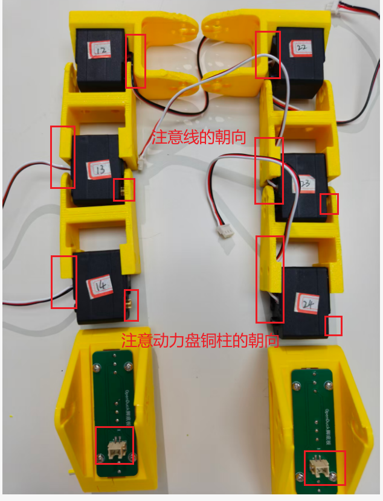</p><p data-lake-id="ue34a400e" id="ue34a400e"><span data-lake-id="u4138c3df" id="u4138c3df">​</span><br/></p><h1 data-lake-id="ZAgBl" data-lake-index-type="2" id="ZAgBl"><span data-lake-id="u2415810e" id="u2415810e">安装电机动力盘</span></h1><p data-lake-id="u55f0fca5" id="u55f0fca5" style="text-align: center">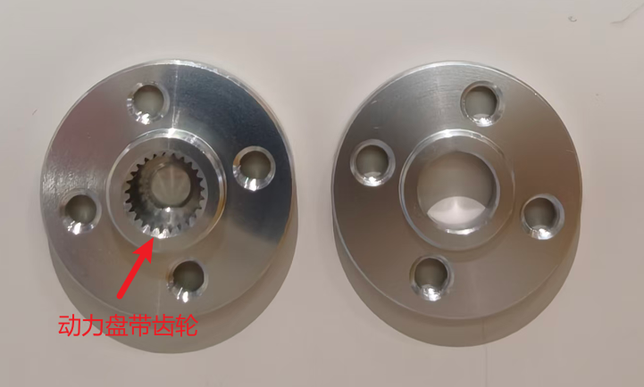</p><p data-lake-id="u48d007bc" id="u48d007bc"><span data-lake-id="ua5bb1cfc" id="ua5bb1cfc">将动力盘套在带齿的铜柱上面，并用M3的螺丝固定住</span></p><p data-lake-id="ue689d72b" id="ue689d72b" style="text-align: center">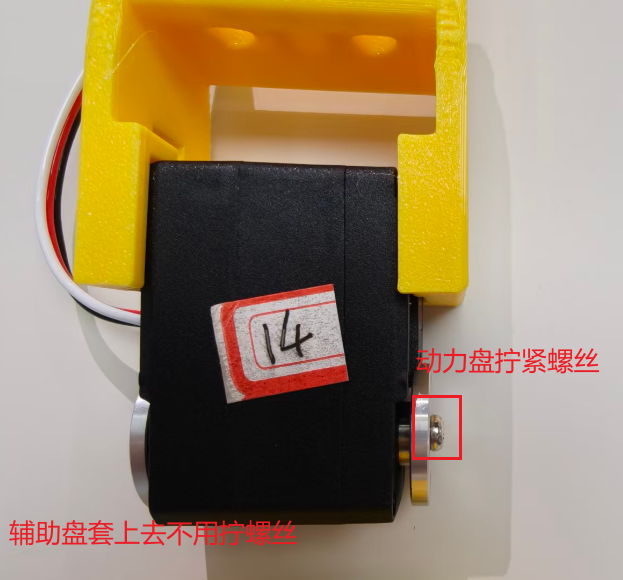</p><p data-lake-id="ub466eb71" id="ub466eb71" style="text-align: center">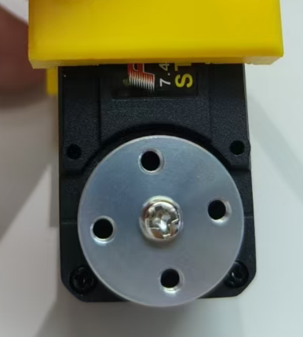</p><h1 data-lake-id="Zz33V" data-lake-index-type="2" id="Zz33V"><span data-lake-id="ud941f690" id="ud941f690">安装辅助盘</span></h1><p data-lake-id="ubd065616" id="ubd065616"><span data-lake-id="u267331de" id="u267331de">将辅助盘套上去即可</span></p><p data-lake-id="uc9166e1b" id="uc9166e1b" style="text-align: center">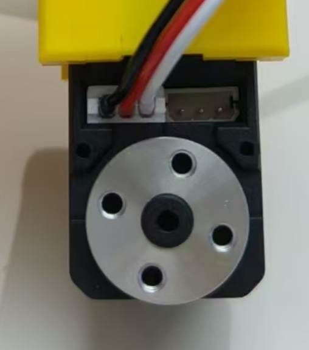</p><p data-lake-id="ub7bd77e0" id="ub7bd77e0"><span data-lake-id="u87414648" id="u87414648">之后的每一个电机都是这样操作</span></p><p data-lake-id="u3c6fe8f7" id="u3c6fe8f7"><span data-lake-id="u1a79b2c2" id="u1a79b2c2">​</span><br/></p><h1 data-lake-id="CGV59" data-lake-index-type="2" id="CGV59"><span data-lake-id="u52135997" id="u52135997">固定踝关节</span></h1><p data-lake-id="u50a32953" id="u50a32953" style="text-align: center">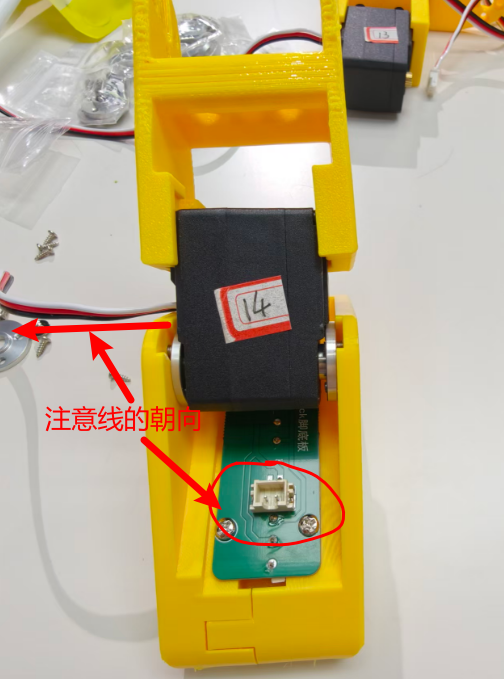</p><p data-lake-id="u9f8c2c79" id="u9f8c2c79"><span data-lake-id="u47d15aba" id="u47d15aba">用电机配套的4颗自攻丝固定住电机</span></p><p data-lake-id="u13599819" id="u13599819" style="text-align: center">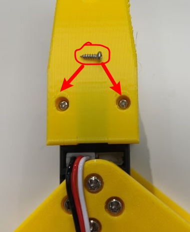</p><p data-lake-id="u70afd910" id="u70afd910"><br/></p><h1 data-lake-id="TUo2q" data-lake-index-type="2" id="TUo2q"><span data-lake-id="ue2793c14" id="ue2793c14">固定膝关节</span></h1><p data-lake-id="uaba324ba" id="uaba324ba" style="text-align: center">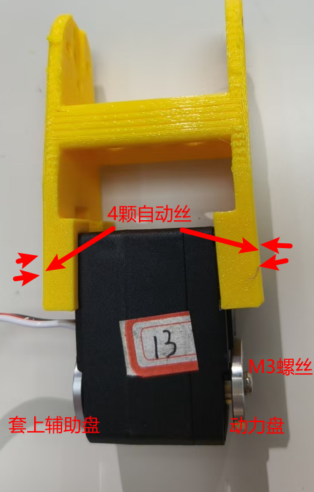</p><p data-lake-id="uc6cbd1b3" id="uc6cbd1b3"><span data-lake-id="u45d8a4c9" id="u45d8a4c9">将膝关节和踝关节拼在一起，注意线的朝向</span></p><p data-lake-id="u169ae66b" id="u169ae66b" style="text-align: center">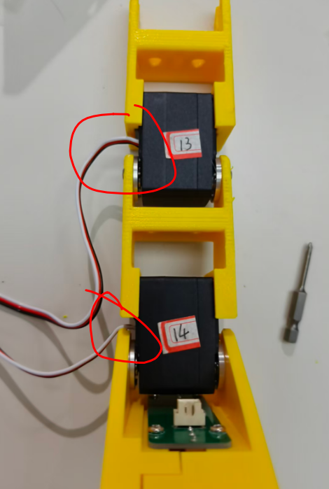</p><h1 data-lake-id="mMRwM" data-lake-index-type="2" id="mMRwM"><span data-lake-id="u32d1f8bd" id="u32d1f8bd">固定髋关节</span></h1><p data-lake-id="uba5d4cd6" id="uba5d4cd6"><span data-lake-id="u1370e41b" id="u1370e41b">注意线的朝向</span></p><p data-lake-id="u337370bf" id="u337370bf" style="text-align: center">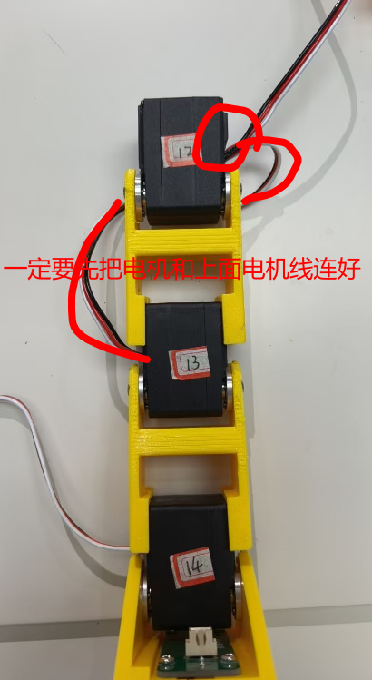</p><p data-lake-id="u21e5bd3c" id="u21e5bd3c" style="text-align: center">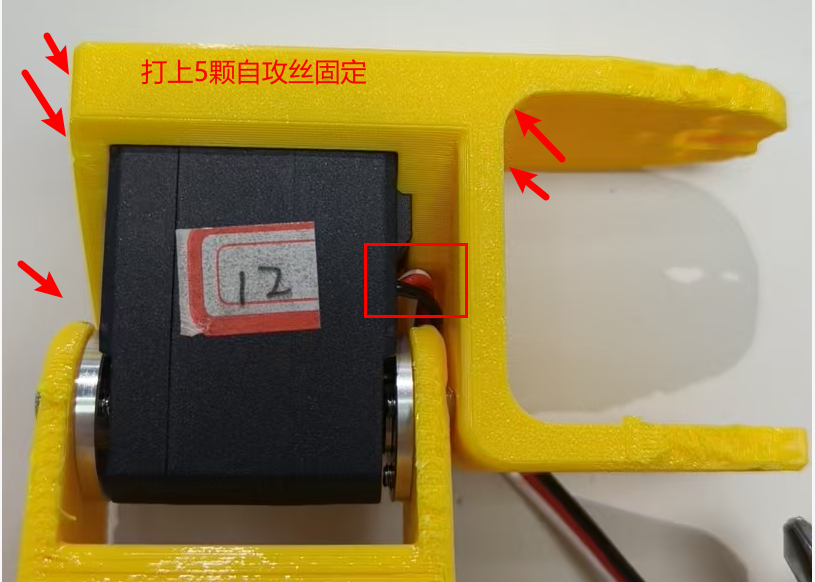</p><p data-lake-id="u20577247" id="u20577247"><span data-lake-id="u7b72def8" id="u7b72def8">装完之后，从侧面检查右腿是否安装错误</span></p><p data-lake-id="u387c76f0" id="u387c76f0" style="text-align: center">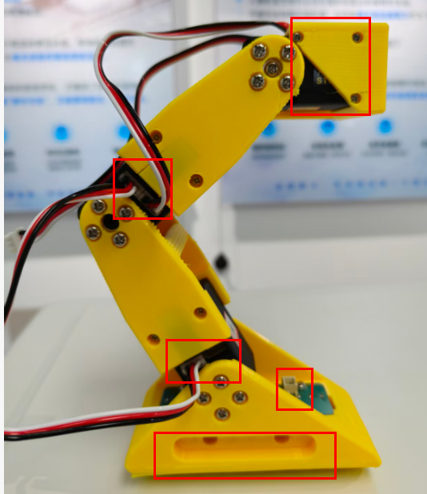</p><h1 data-lake-id="VkFt2" data-lake-index-type="2" id="VkFt2"><span data-lake-id="uc7925685" id="uc7925685">检查左右腿组装</span></h1><p data-lake-id="u1ff855ad" id="u1ff855ad"><span data-lake-id="u712f777c" id="u712f777c">主要要检查一下先出线方向是否如下图所示</span></p><p data-lake-id="uf9a81853" id="uf9a81853" style="text-align: center">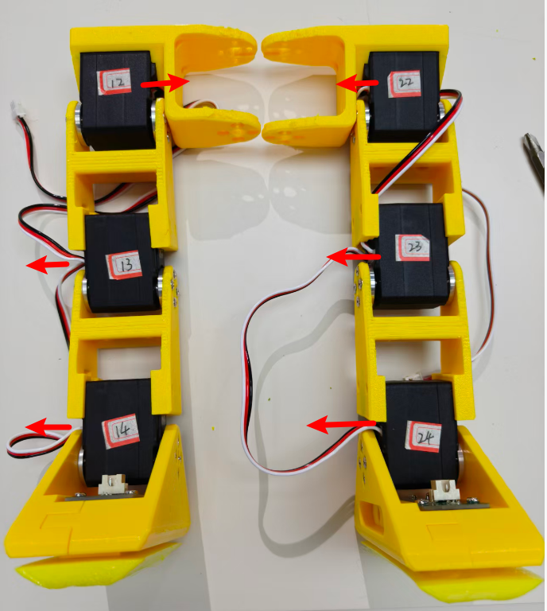</p>